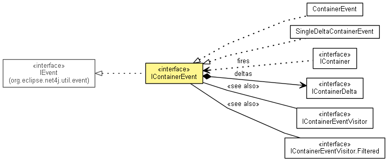

org.eclipse.net4j.util.container
Interface IContainerEvent<E>
- All Superinterfaces:
- IEvent
- All Known Implementing Classes:
- ContainerEvent, SingleDeltaContainerEvent
public interface IContainerEvent<E>
- extends IEvent

An event fired from a container when its elements have changed.
- No Implement
- This interface is not intended to be implemented by clients.
- No Extend
- This interface is not intended to be extended by clients.
getSource
IContainer<E> getSource()
- Specified by:
getSource in interface IEvent
- Since:
- 3.0
isEmpty
boolean isEmpty()
getDeltas
IContainerDelta<E>[] getDeltas()
getDelta
IContainerDelta<E> getDelta()
throws IllegalStateException
- Throws:
IllegalStateException
getDeltaElement
E getDeltaElement()
throws IllegalStateException
- Throws:
IllegalStateException
getDeltaKind
IContainerDelta.Kind getDeltaKind()
throws IllegalStateException
- Throws:
IllegalStateException
accept
void accept(IContainerEventVisitor<E> visitor)
Copyright (c) 2004 - 2011 Eike Stepper (Berlin, Germany) and others.